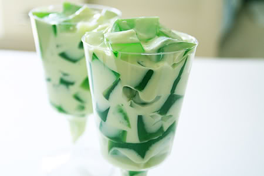

ADOBO
Have a taste of slowly cooked meat in it's marinade of soy sauce, garlic, red onions and vinegar.

SINIGANG
Among one the of OG Filipino dishes characterized by its sour and savoury taste with loads of veggies.

BUKO PANDAN
A famous Filipino cold dessert. Made from fresh coconut and pandan flavoured jelly that is very easy to make.